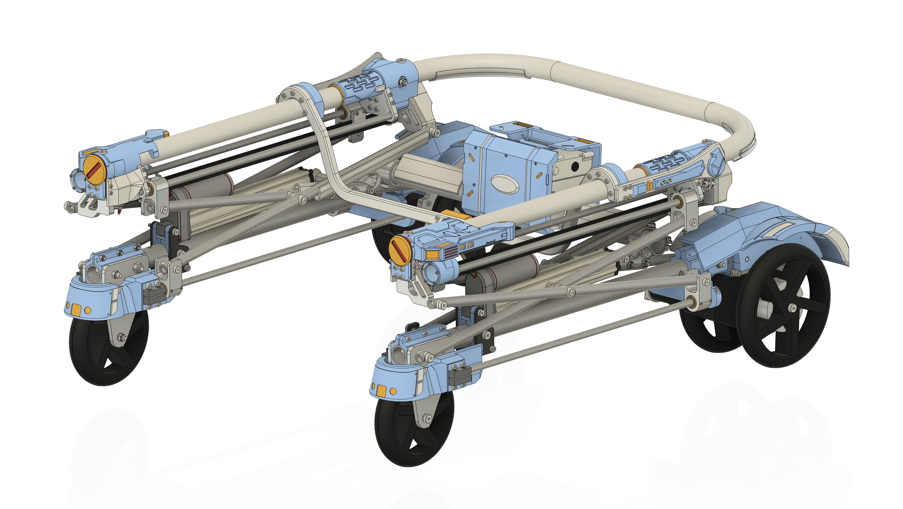
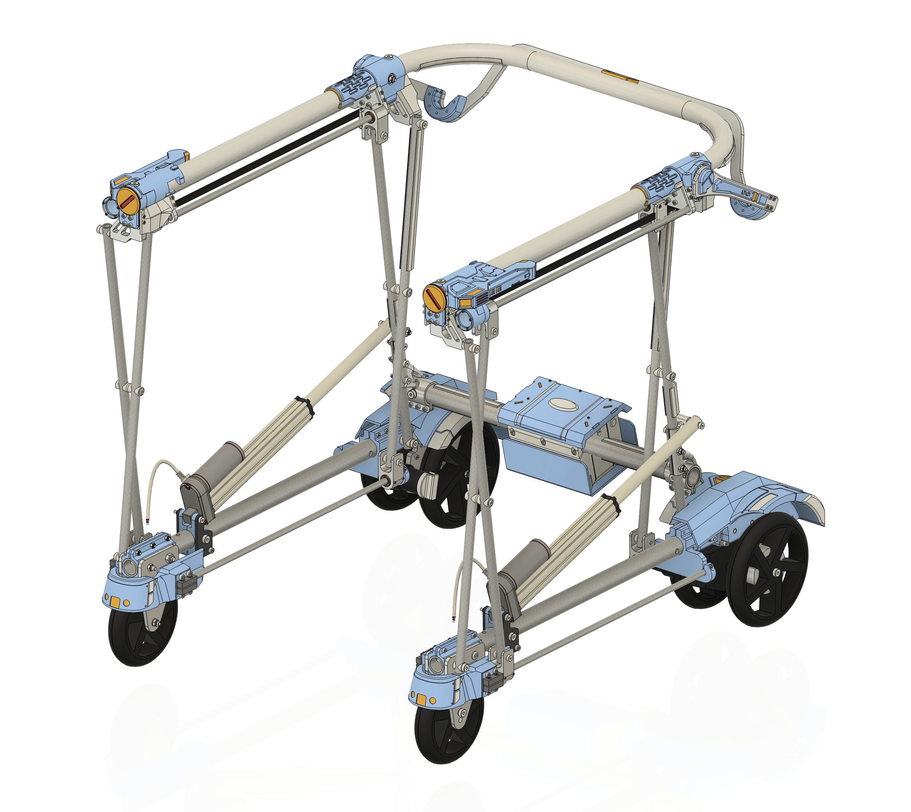

ORIGINAL FREESTEP REFERENCE (CLICK TO ENLARGE)

FreeStep_close.jpg (Seat Down)
FreeStep_open.jpg (Seat Stowed)
SELECTED PART ENGINEERING SPECS
ALL
Full FreeStep Air Assembly
Exact FreeStep Open-U Linkage + Sliding/Folding U-Seat Bar Architecture
Use the 3 mode buttons at the top-left to switch between FreeStep_close (frame lowered, hanging U-seat bar deployed in the middle for sitting), Sit-to-Stand Lift (diagonal actuators raise the upper U-rail and U-seat bar to lift her to standing), and FreeStep_open (U-seat bar unlatches at the center, swings 90° up, and slides to the rear corners so the walking bay is 100% open!).
2D ENGINEERING BLUEPRINT (CLICK TO ENLARGE)